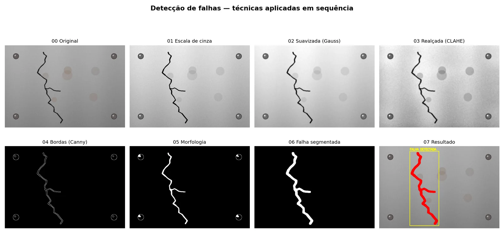

Processamento de imagens · IA na Indústria 4.0 · PUCPR · 2026
Detecção de falhas em peças metálicas
Um pipeline de visão computacional clássica, sem rede neural, que encontra e destaca uma rachadura numa chapa de metal.

A ideia
Nem sempre precisa de deep learning. Neste caso, técnicas clássicas aplicadas uma depois da outra deram conta.
Cada técnica trabalha em cima do resultado da anterior, e salvei todas as imagens intermediárias para o relatório técnico.
A peça é uma chapa sintética que o próprio script gera, sempre igual (semente fixa). Ela tem rebites e manchas de corrosão que o pipeline não pode confundir com a falha.
O pipeline
-
01
Escala de cinza
A cor não ajuda a achar a fissura, e com um canal só as próximas etapas ficam mais simples.
-
02
Suavização gaussiana
Kernel 7×7 remove o ruído da superfície antes de procurar bordas.
-
03
Realce com CLAHE
Equalização adaptativa (clip 2,0, grade 8×8) compensa a iluminação desigual da chapa.
-
04
Bordas com Canny
Limiares 50/150 destacam as transições fortes, que são a fissura e os rebites.
-
05
Fechamento morfológico
Elipse 5×5 em 2 iterações reconecta os trechos quebrados da fissura.
-
06
Segmentação por forma
Mantém só componentes longos (diagonal > 60 px) e alongados (razão > 2), descartando os rebites redondos.
-
07
Resultado
A fissura é pintada de vermelho e marcada com uma caixa “FALHA DETECTADA”.

Limitações e próximos passos
Os limiares foram ajustados para esta cena. Em fotos reais, com iluminação e texturas variadas, o próximo passo seria calibrá-los num conjunto de imagens ou trocar a segmentação por um modelo treinado.